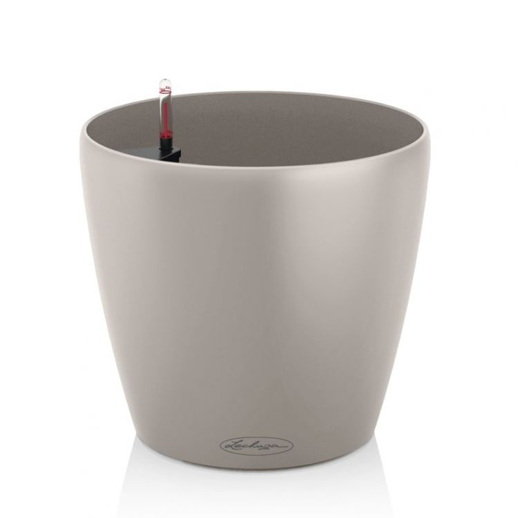
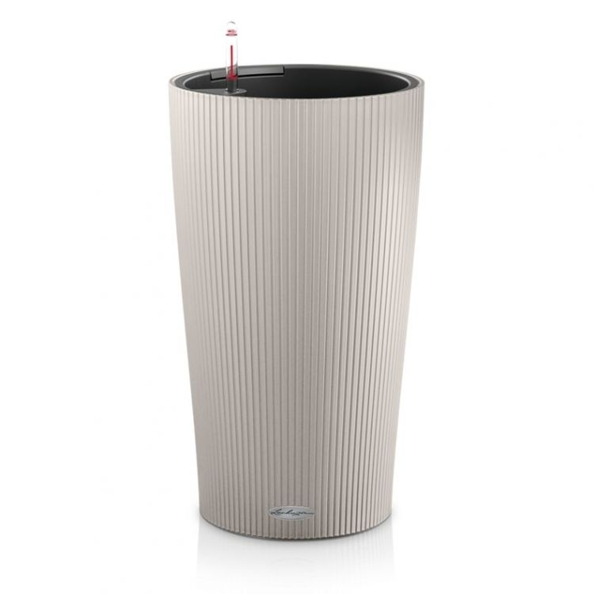

CLASSICO Color 43
Ø42 × 39.5 см
Матовый бежевый
8 990 ₽
Точная карточкаДве группы в столовой и композиция у окна холла.
04 / Озеленение
Высокий, средний и низкий силуэты в одной матовой семье кашпо. Используем имеющиеся растения, снимаем хаотичную россыпь горшков и освобождаем рабочие поверхности.

Ø42 × 39.5 см
Матовый бежевый
8 990 ₽
Точная карточкаØ34.5 × 32.5 см
Матовый бежевый
7 695 ₽
Точная карточкаØ27.5 × 26 см
Матовый бежевый
4 700 ₽
Точная карточка
Ø32 × 56 см
Матовый бежевый
7 754 ₽
Точная карточкаГруппы у свободных пристенных и оконных участков. Крупные экземпляры переходят в напольные кашпо; небольшие можно оставить у света в единых компактных контейнерах.
Одна трёхуровневая группа у окна. В альтернативном сценарии - другой ритм растений и текстиля, при сохранении доступа к шкафам.
Фотографии CLASSICO показывают серию; размеры моделей приведены в карточках. Подбор по реальному корневому кому и освещённости. Разные растения сохраняют отдельные внутренние контейнеры и режимы полива. Наличие партии и доставка в Ростов не подтверждены.